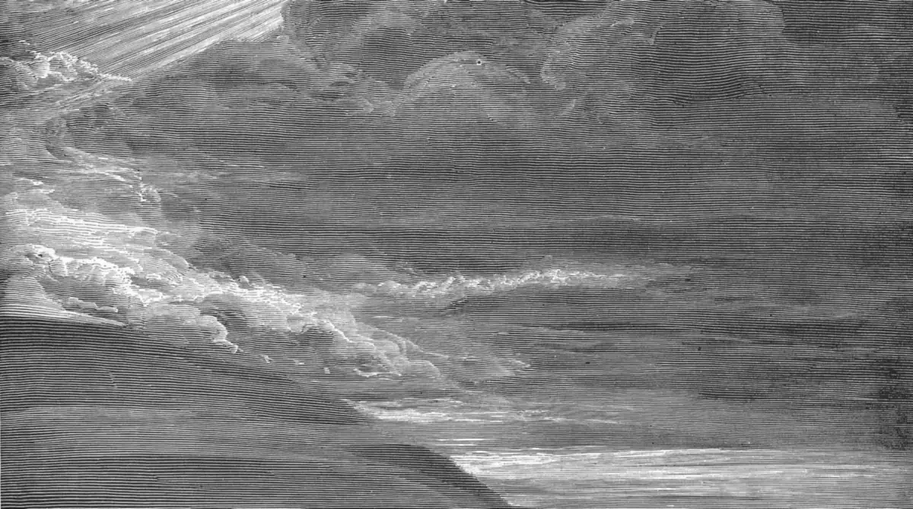

Gênesis 1 e 2
Dois começos
O texto conta a criação duas vezes.
Os sete dias, e depois o jardim com o homem feito do pó. São dois relatos, de dois jeitos, e a série conta os dois na ordem, sem juntar. Dos quatro rios do Éden, o mapa acha dois.
episódio 1 de 4
em produção